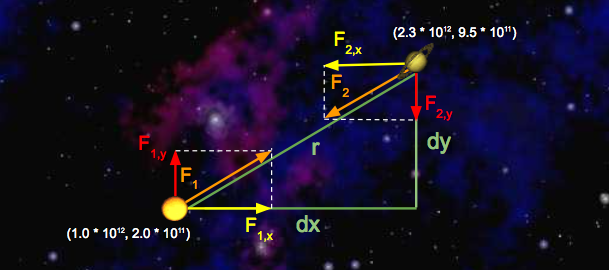

|
I'm a 7th grader who loves to play golf. I also know how to code python and java. I have self-taken CS61A and CS61B, and have self-taken some of CS61C. |

|
|
Conway's Game of Life from CS61C
This is project 1, Conway's Game of Life in RGB from CS61C. In this project, I implemented functions following a set of rules. Any living cell (white) with three live nieghbors surives to the next generation. Any dead cell with three live nieghbors becomes a living cell in the next generation. All other cells die in the next generation. Similarly, all other dead cells stay dead. Using RGB values, I was able to make this simulation happen. [Link] |
|

|
Proj2c from CS61B
This project proj2c from CS61B course is a project about building the "smart" pieces of a web-browser based Google Maps clone. Using the data structers that I created in proj2ab and hw4 (of CS61B), I use them in this project to do things such as finding the closest path from a node to a node (using kd-trees), and autocomplete search (using tries). This project is able to display a map, able to zoom in and out of Berkeley, finding places with the search locations bar, and finding the nearest path from one place to another. [Link] |
|  |
Project NBody from CS61B
The project NBody from CS61B is a project to give you a crash course in Java. NBody is creating a program that draws an animation of bodies floating around in space tugging each other with the power of gravity. It simulates the motion of N objects in a plane, accounting for the gravitational forces mutually affecting each object as demonstrated by Sir Isaac Newton's Law of Universal Gravitation. [Link] |

|
Project Ants From CS61A
I implemented the project Ants. This project is a tower defense game called Ants Vs. SomeBees. As the ant queen you populate your colony with the bravest ants. Your ants must protect the queen by throwing leaves and irrate the evil bees that invade your territory. This is a project about object-oriented programming of ants. [Link] |
|
|
|
Website template from Jon Barron. |